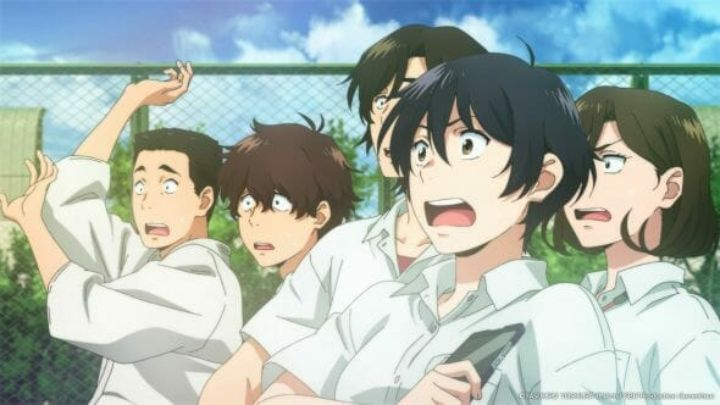

On the surface, "Sing a Bit of Harmony" looks like a very ordinary anime film, with a high school setting. Probably a romance, based on the poster. But no, it's actually a science-fiction film first. And that's not the only way where the movie surpassed by expectations: "Sing a Bit" is a surprisingly effective crowdpleaser. I don't remember an anime film that was so joyful to watch, and that's despite having a couple in the theater that wouldn't stop talking for the entire runtime (I swear, "Netflix and chill" is causing people to forget how to act in public settings). As for why the movie might be significant: Funimation, the American company, is actually a co-producer on this 2021 Japanese film, a sign of trends to come. Also, the director is Yasuhiro Yoshiura, who had made his name from independent projects "Pale Cocoon" and "Time of Eve," and the movie "Patema Inverted." Ah, that guy! I liked his work, and wondered what he was up to all this time. Otherwise, the tone and setting reminded me most of the 2017 film "Napping Princess," although this generally works better. Set in a near future Japan, a massive tech compny is a household name throughout the country, and employs most of the adults in the small town where the story is told. Smart-homes and A.I. is commonplace everywhere. One ambitious project is about to begin the testing phase: an advanced A.I. in a humanoid robot, disguised as a teenage girl. The test is for the robot, Shion, to go to a nearby school as a new student. If everyone thinks she's just a human and doesn't suspect anything, the test passes, a major step forward for science.The leader of the A.I. project happens to be the mother of Satomi, a quiet and serious girl at the local school where Shion is about to go. And Shion gives herself away quite quickly, ignoring social cues and immediately walking up to Satomi, blurting out "Are you happy, Satomi?!" before bursting into song. But only Satomi, noticing hints that her mother's project was beginning today, recognizes she's an android, as well as a handful of close friends. In an effort to prevent the project from failing, they agree to not tell the school, and even pitch in to help Shion act normally. Meanwhile, the question remains as to why the upbeat Shion recognized Satomi to begin with, and why she was so obsessed with the happiness with this one person (and whether a computer program could understand whay happiness even means).  A big part of the joy in the movie is how spirited Shion is, and how likable and relatable the main cast is. Satomi's friends range from "popular" to "loser," but they all lack self-confidence for one reason or another. Some are in relationships, or want to be, in the case of Satomi's nerdy childhood friend. And Shion's insistence, and singing out-loud, slowly helps all of them, up until their antics go a little too far and put the project in jeopardy. There are still some serious themes here, unavoidable for any drama set in high school, as well as the pressures of working in mutli-hierarchical company. But they are touched upon without going overboard, and Shion's infectious enthusiasm helps the medicine go down. Even the climax regarding Shion's fate has a happy ending.And yes, there is singing in "Sing a Bit," another growing trend in anime. It's one of the better attempts at an anime musical yet. Shion is really the only one who sings though, but the songs are upbeat and easy enough to sing along and tap your toes to. In the English dub, Shion's song translations and vocal performance make the dub worth watching, and surprisingly, the lip-flaps are synced perfectly (I wonder if Funimation on the producer team had anything to do with that). There are a couple moments where the rest of the cast also sings along, but appropriately, they sound like awkward high-school students with cracking voices, part of the smart decision to keep the characters grounded around their unrealistically cheerful android buddy.The production values are solid. It's basically par for the course for J.C. Staff, but makes use of pleasant character designs, colorful backgrounds, and some beautiful set pieces. Also part of an increasing trend is the new philosophy of using 2D animation and backgrounds as much as possible, and keeping 3D animation for the "virtual" (or "artificial" in the world of this anime), a good choice. One of the only real complaints I have is that, despite A.I. being to topical and despite director Yoshiura's past work, this movie barely covers any philosophically-interesting themes regarding what computer programs are and what they are capable of. This isn't a particularly deep or thoughtful movie. It almost feels manufactured to entertain. But it's manufactured well, very entertaining and with character drama that gives it enough meaning to keep attention. "Sing a Bit of Harmony" is a fun time for all.
- "Ani" More reviews can be found at : https://2danicritic.github.io/ Previous review: review_Sinbad_-_Legend_of_the_Seven_Seas Next review: review_Sleeping_Beauty